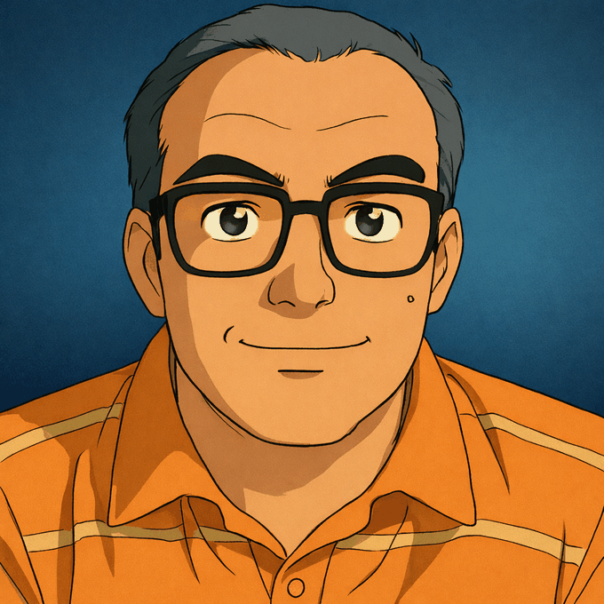

01
Personas y liderazgo
Coordinación de equipos, comunicación abierta, motivación y seguimiento de objetivos en entornos de soporte y atención al cliente.
Soy David González, técnico en Gestión Comercial y Marketing Digital, con experiencia en liderazgo de equipos, grandes cuentas, calidad y operaciones de soporte.
Mi trayectoria combina orientación al cliente, coordinación de personas y mejora continua. Me interesa transformar los retos cotidianos en procesos más claros, equipos más cohesionados y mejores experiencias de servicio.

He desarrollado mi carrera en los sectores de tecnología y telecomunicaciones, en funciones que conectan el servicio al cliente, las operaciones y los objetivos de negocio.
Coordinación de equipos, comunicación abierta, motivación y seguimiento de objetivos en entornos de soporte y atención al cliente.
Gestión de grandes cuentas, desarrollo de relaciones comerciales, prospección y colaboración con equipos de ventas.
Supervisión operativa, evaluación del rendimiento, revisión de herramientas y atención a la calidad de los procesos.
Gestión de clientes y apoyo a televentas y CAT. Coordinación del equipo, cohesión y seguimiento de los objetivos establecidos.
Supervisión operativa, seguimiento del rendimiento y revisión de herramientas y sistemas para favorecer su eficacia.
Liderazgo de equipo, motivación y fomento de un entorno de comunicación positiva y colaboración.
Gestión de grandes clientes, coordinación de ventas y almacén, y relación con grandes superficies.
Trayectoria anterior en ventas, implantación comercial, gestión de tienda, visual merchandising y grandes cuentas.
Una combinación de visión comercial, capacidad de coordinación y familiaridad con entornos tecnológicos.
Especialista en Marketing Digital · Dirección y Gestión de Empresas · Marketing · Visual Merchandising · Mando Intermedio Comercial.
De forma independiente creo contenido sobre divulgación y tecnología para canalizar mi curiosidad y seguir aprendiendo, siempre con una clara separación respecto a mi actividad profesional. Si quieres conocer más sobre estos proyectos o seguirme en redes sociales, puedes hacerlo en retrovulcano.es.
Un espacio de divulgación sobre ciencia, sistemas complejos e historia de la tecnología.
Explorar Orbe Autómata ↗Un rincón dedicado a los videojuegos clásicos, la cultura de 8 bits y la memoria digital.
Conocer Pulsa y Juega ↗Estoy abierto a conversaciones sobre oportunidades profesionales, colaboración y nuevos retos.